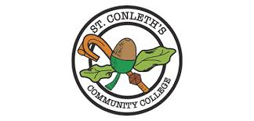
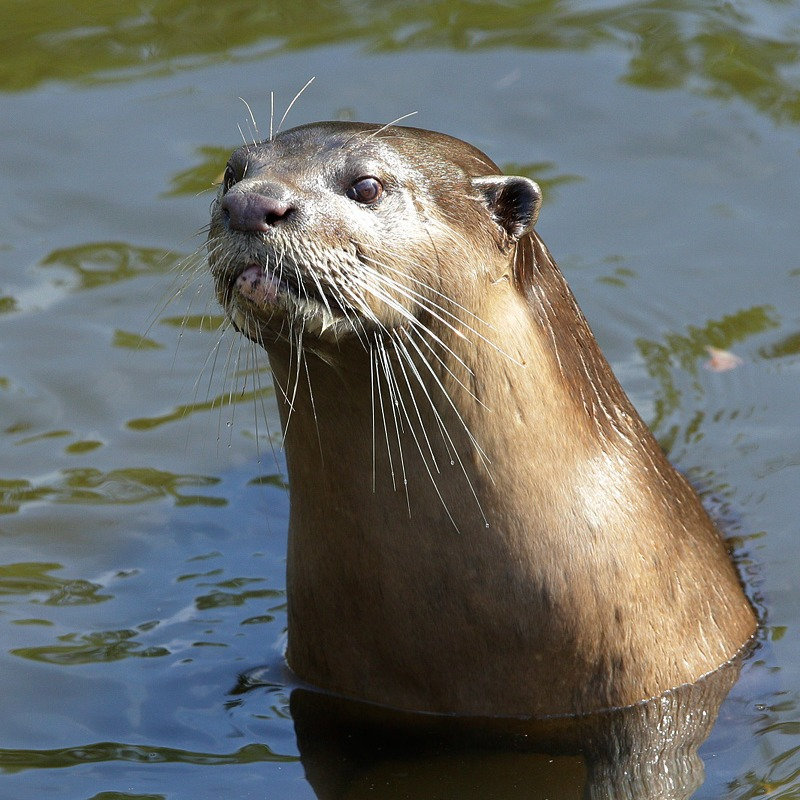

Pethology was born out of a passion for animal care and a desire to make learning more engaging for students. We offer a platform where individuals can access high-quality study resources tailored to the QQI Level 5 Animal Care course, proudly designed by Animal Care Students from St Conleths Community College to help you succeed in the world of animal welfare and healthcare.
Our Mission
We aim to empower Animal Care learners by offering content that is easy to understand, fun to explore, and rooted in real-life experience from students and professionals in the field.
What We Offer
We provide carefully curated learning material, interactive quizzes, and tools for both students and teachers. Our platform is designed to support everyone from beginners to advanced Animal Care students.
🗺️ Our Roadmap
From a simple quiz tool to a full Animal Care learning platform — see where we've been and where we're headed.
View full roadmap →Our Team

Nana da Silva
Animal Care Assistant with a love for Veterinary environment. Founder & developer of Pethology.